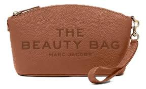
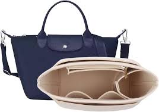
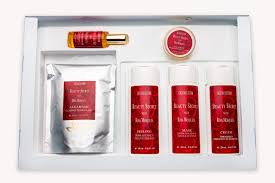

Un neceser de maquillaje (también conocido como cosmetiquera) es un estuche o bolsa portátil diseñado específicamente para organizar, proteger y transportar cosméticos y herramientas de belleza. Permite tener a la mano artículos como bases, brochas, labiales y polvos de forma ordenada, ya sea en el bolso diario o de viaje
| Marc Jacobs | Longchamp | Face Secrets / Beauty Secrets | |||
|---|---|---|---|---|---|
|  |
 |
 |
| $2,950.00 | $1,520.00 | $950.00 |
|---|